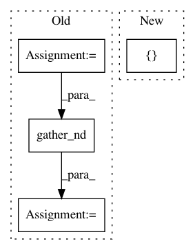

0b64530ff2cc6390ea3e56c77ce081ed3a3d3c9a,tensorflow_ranking/python/losses.py,_ListMLELoss,compute_unreduced_loss,#_ListMLELoss#Any#Any#Any#,1113
Before Change
weights = tf.squeeze(weights)
// Shuffle labels and logits to add randomness to sort.
shuffled_indices = utils.shuffle_valid_indices(is_label_valid, self._seed)
shuffled_labels = tf.gather_nd(labels, shuffled_indices)
shuffled_logits = tf.gather_nd(logits, shuffled_indices)
// TODO: Remove the shuffling above and use
// shuffle_ties=True.
After Change
tf.reduce_min(labels, axis=1, keepdims=True) -
1e-6 * tf.ones_like(labels))
sorted_labels, sorted_logits = utils.sort_by_scores(
scores, [labels, logits], shuffle_ties=True)
raw_max = tf.reduce_max(input_tensor=sorted_logits, axis=1, keepdims=True)
sorted_logits = sorted_logits - raw_max
In pattern: SUPERPATTERN
Frequency: 3
Non-data size: 4
Instances
Project Name: tensorflow/ranking
Commit Name: 0b64530ff2cc6390ea3e56c77ce081ed3a3d3c9a
Time: 2019-10-29
Author: xuanhui@google.com
File Name: tensorflow_ranking/python/losses.py
Class Name: _ListMLELoss
Method Name: compute_unreduced_loss
Project Name: reinforceio/tensorforce
Commit Name: a1926719a8174e17f9b002c6369880f11b5dab88
Time: 2016-11-13
Author: mi.schaarschmidt@gmail.com
File Name: tensorforce/value_functions/deep_q_network.py
Class Name: DeepQNetwork
Method Name: create_training_operations
Project Name: NifTK/NiftyNet
Commit Name: 0c63b9dcd7ee3da39c74379a01d16e3a360d3506
Time: 2017-10-26
Author: wenqi.li@ucl.ac.uk
File Name: niftynet/layer/resampler.py
Class Name: ResamplerLayer
Method Name: _resample_inv_dst_weighting